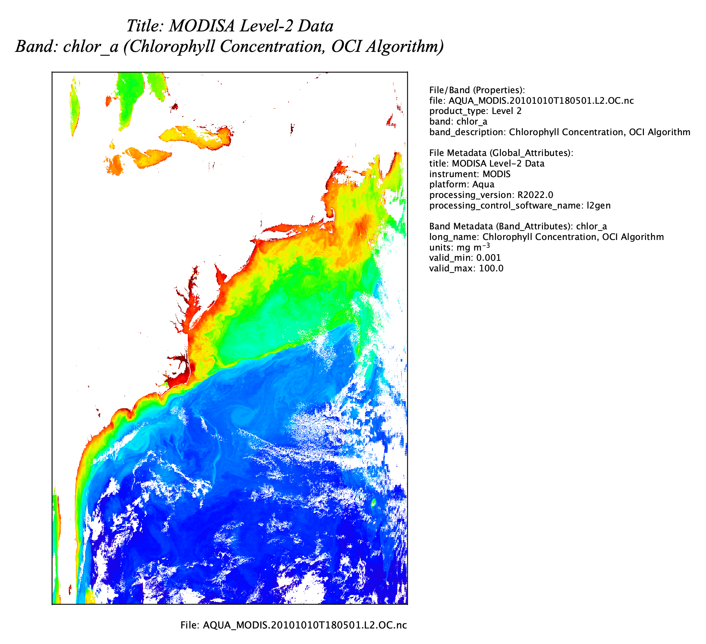

| Annotation Metadata Overlay | |
The Annotation Metadata Layer tool creates an image overlay containing user text annotation along with user selected project file properties and file metadata. Parameters of the Annotation Metadata Layer are editable in the Layer Editor as well as in the Preferences

Image 1: Annotation Metadata Layer shown over a MODIS Aqua level-2 scene image
Divided into 3 sections: Header Annotation (shown at top),
Margin Annotation (shown at right), Foot Annotation (shown at bottom)
Specifies the annotation text and metadata parameters which
go in the Header Annotation section.
• Show Header Annotation:
Toggles on/off the Header Annotation section.
• Header Location:
General anchor location of the Header Annotation section.
• Header Gap:
Gap between the Header Annotation section and the image scene (in
percentage of image size).
• Header Text:
Freeform text
◦ Supports inline replacement variables for metadata:
<PROPERTY={key}>
<FILE_META={key}> (alternate key name <GLOBAL_ATTRIBUTE={key}>
<BAND_META={key}> (alternate key name <BAND_ATTRIBUTE={key}>
◦ Supports several html tags:
<i>, <b>, <br>, <sup>, <sub>
• Convert Header Carets to Superscripts:
Converts carets found in the text to superscripts.
◦ (i.e. 'e = mc^2' would display as 'e = mc2')
Specifies the annotation text and metadata parameters which
go in the Margin Annotation section.
• Show Margin Annotation:
Toggles on/off the Margin Annotation section.
• Margin Location:
General anchor location of the Margin Annotation section.
◦ Note that this location is not limited to being in the margin.
• Margin Gap:
Gap between the margin annotation section and the image scene (in
percentage of image size).
• Margin Text:
Freeform text
◦ Supports inline replacement variables for metadata:
<PROPERTY={key}>
<FILE_META={key}> (alternate key name <GLOBAL_ATTRIBUTE={key}>
<BAND_META={key}> (alternate key name <BAND_ATTRIBUTE={key}>
◦ Supports several html tags:
<i>, <b>, <br>, <sup>, <sub>
• PROPERTIES Section Heading:
Heading to display for the PROPERTIES section
• PROPERTIES List:
A comma delimited list of desired project file properties.
• PROPERTIES Show All:
Displays all project file properties.
• FILE_META Section Heading:
Heading to display for the FILE_META section
• FILE_META List:
A comma delimited list of desired file metadata.
• FILE_META Show All*:
Displays all FILE_META (but does not show many of the
potentially massive list of Processing Control Parameters).
• FILE_META Show All (Processing Control Parameters):
Displays all the Processing Control Parameters which are part
of the FILE_META.
• BAND_META Section Heading:
Heading to display for the BAND_META section
• BAND_META List:
A comma delimited list of desired band metadata.
• BAND_META Show All:
Displays all the BAND_META.
• Attribute Delimiter:
Delimiter to use when displaying value pair listing of metadata.
• Convert Margin Carets to Superscripts:
Converts carets found in the text to superscripts.
◦ (i.e. 'e = mc^2' would display as 'e = mc2')
Specifies the annotation text and metadata parameters which
go in the Footer Annotation section.
• Show Footer Annotation:
Toggles on/off the Footer Annotation section.
• Footer Location:
General anchor location of the Footer Annotation section.
• Footer Gap:
Gap between the Header Annotation section and the image scene (in
percentage of image size).
• Footer Text:
Freeform text
◦ Supports inline replacement variables for metadata:
<PROPERTY={key}>
<FILE_META={key}> (alternate key name <GLOBAL_ATTRIBUTE={key}>
<BAND_META={key}> (alternate key name <BAND_ATTRIBUTE={key}>
◦ Supports several html tags:
<i>, <b>, <br>, <sup>, <sub>
• Convert Footer Carets to Superscripts:
Converts carets found in the text to superscripts.
◦ (i.e. 'e = mc^2' would display as 'e = mc2')
• Show My Info:
Displays user info (see preferences)
Specifies the font formatting for the Header Annotation section.
• Header Font Size:
Size of the header text font
• Header Font Color:
Color of the header text
• Header Font Type:
Font name of the header text
• Header Font Italic:
Set header text as italic font
• Header Font Bold:
Set header text as bold font
Specifies the font formatting for the Margin Annotation section.
• Margin Font Size:
Size of the margin text font
• Margin Font Color:
Color of the margin text
• Margin Font Type:
Font name of the margin text
• Margin Font Italic:
Set margin text as italic font
• Margin Font Bold:
Set margin text as bold font
Specifies the font formatting for the Footer Annotation section.
• Footer Font Size:
Size of the footer text font
• Footer Font Color:
Color of the footer text
• Footer Font Type:
Font name of the footer text
• Footer Font Italic:
Set footer text as italic font
• Footer Font Bold:
Set footer text as bold font
The following is a list of all the "PROPERTY" inline variables for project files.
File level information properties:
<PROPERTY=file_location>
<PROPERTY=product_type>
<PROPERTY=scene_start_time>
<PROPERTY=scene_end_time>
Band level information properties:
<PROPERTY=band>
<PROPERTY=units>
<PROPERTY=band_description>
<PROPERTY=scene_height>
<PROPERTY=scene_width>
<PROPERTY=scene_size> -(combines scene_width and scene_height)
<PROPERTY=wavelength>
<PROPERTY=angle>
<PROPERTY=flag_coding>
<PROPERTY=valid_pixel_expression>
<PROPERTY=no_data_value>
<PROPERTY=is_no_data_value_set>
<PROPERTY=is_no_data_value_used>
<PROPERTY=is_scaling_applied>
<PROPERTY=scaling_factor>
<PROPERTY=scaling_offset>
<PROPERTY=is_log_scaled>
<PROPERTY=is_palette_log_scaled>
<PROPERTY=node_display_names>
<PROPERTY=node_names>
File level metadata can be accessed with any of the following:
<FILE_META={key}>
<GLOBAL_ATTRIBUTE={key}>
<GLOBAL_ATTR={key}>
Band level metadata can be accessed with any of the following:
<BAND_META={key}>
<BAND_ATTRIBUTE={key}>
<BAND_ATTR={key}>